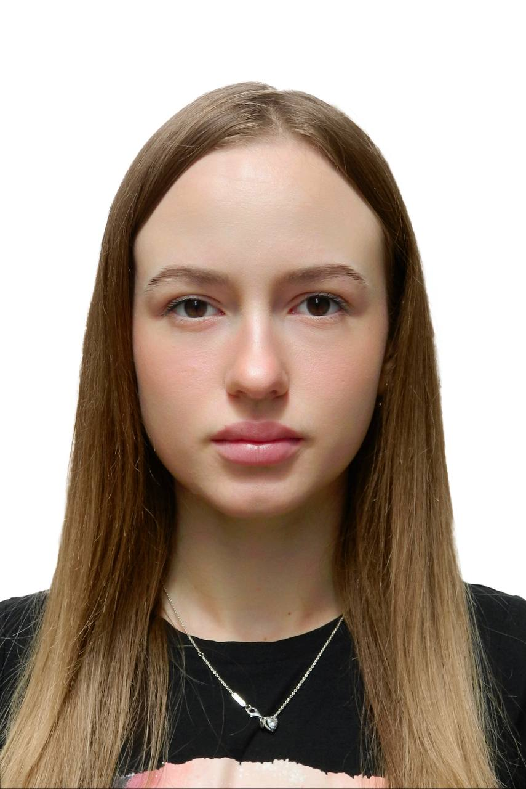

UI/UX dizajn
No Limit Logistics
Návrh používateľského rozhrania a používateľskej skúsenosti pre web logistickej spoločnosti so zameraním na intuitívnu navigáciu, sledovanie zásielok a zákaznícku zónu.
Osobné portfólio
Študujem elektronický obchod a manažment na Žilinskej univerzite v Žiline. Popri štúdiu pracujem v logistickej spoločnosti a zaujímam sa o marketing, digitálne podnikanie a tvorbu webových stránok.
Vybrané práce
Projekty, na ktorých pracujem počas štúdia.
UI/UX dizajn
Návrh používateľského rozhrania a používateľskej skúsenosti pre web logistickej spoločnosti so zameraním na intuitívnu navigáciu, sledovanie zásielok a zákaznícku zónu.
Dátová analytika · Excel
Analýza zákazníckych údajov s využitím opisnej štatistiky, vizualizácie dát a štatistických testov. Zameranie na identifikáciu rozdielov a súvislostí v nákupnom správaní.
Digitálny marketing · E-commerce
Analýza úlohy sociálnych sietí v elektronickom obchodovaní so zameraním na influencer marketing, live shopping, zákaznícke správanie a nové spôsoby online predaja.

O mne
Študujem elektronický obchod a manažment na Žilinskej univerzite v Žiline. Zaujímam sa o digitálny marketing, tvorbu webových stránok a spôsob, akým značky komunikujú so zákazníkmi.
Popri štúdiu pracujem v logistickej spoločnosti a prostredníctvom študentských projektov rozvíjam svoje skúsenosti s návrhom webov, analýzou údajov a digitálnym podnikaním.
Kontaktujte ma